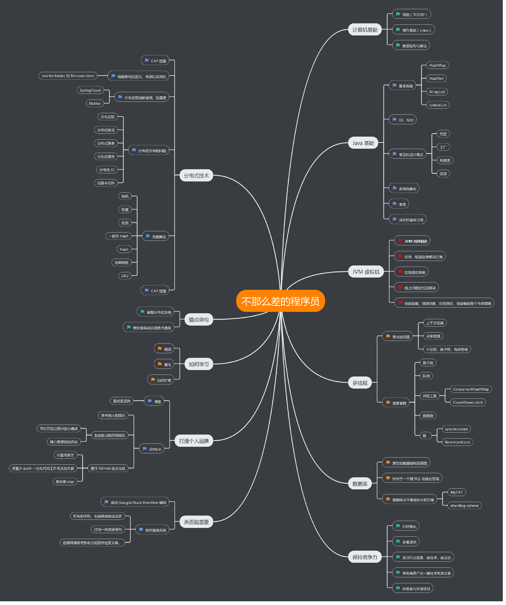

合格的程序员
常用集合
多线程
JVM
分布式
常用框架
架构设计
数据库
算法
Netty
附加技能
关于我们
ArrayList/Vector
LinkedList
HashMap
HashSet
LinkedHashMap
多线程中的常见问题
synchronized 关键字原理
多线程的三大核心
对锁的一些认知
ReentrantLock 实现原理
ConcurrentHashMap 的实现原理
如何优雅的使用和理解线程池
深入理解线程通信
Java 运行时内存划分
类加载机制
OOM 分析
垃圾回收
对象的创建与内存分配
volatile 关键字
一次内存溢出排查优化实战
分布式限流
基于 Redis 的分布式锁
分布式缓存设计
分布式 ID 生成器
Spring Bean 生命周期
Spring AOP 的实现原理
Guava 源码分析（Cache 原理）
轻量级 HTTP 框架
Kakfa produce 源码分析
SpringBoot启动过程(正在完善)
Tomcat 类加载机制
秒杀系统设计
秒杀架构实践
设计一个百万级的消息推送系统
MySQL 索引原理
SQL 优化
数据库水平垂直拆分
红包算法
二叉树层序遍历
是否为快乐数字
链表是否有环
从一个数组中返回两个值相加等于目标值的下标
一致性Hash算法
限流算法
三种方式反向打印单向链表
合并两个排好序的链表
两个栈实现队列
动手实现一个LRU cache
链表排序
数组右移k次
交替打印奇偶数
SpringBoot 整合长连接心跳机制
从线程模型的角度看 Netty为什么是高性能的？